完整原題
作答所需文章／材料
如右圖所示，將質量 1 公斤的擺錘自高處釋放，撞擊桌面上 2 公斤的木塊後，擺錘立即靜止，木塊向前移動 5 公尺後也靜止，不計空氣阻力，試回答下列 20.～22. 題：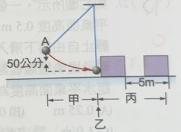
理化第21題｜擺錘與木塊的碰撞速率
理化第22題｜擺錘撞木塊實驗中的兩種守恆
先想一想，再查看答案、解說與原圖
理化第21題｜擺錘與木塊的碰撞速率
分享原卷｜第21題 · 首次出題日期 2026-11-25 · 原AI對話 ↗
逐項解析
| 選項與原句 | 判讀 | 句意與判斷理由 |
|---|---|---|
| (A) V₁ ＞ V₂ | 應選 | 質量較大的木塊接續運動，V₂ 小於 V₁。 |
| (B) V₁ ＝ V₂ | 不選 | 同速將使較重木塊取得較大的動能，題目沒有外加能量。 |
| (C) V₁ ＜ V₂ | 不選 | 若木塊更重又更快，所需動能更大。 |
| (D) 無法得知 | 不選 | 題目提供了足夠的質量和前後運動狀態。 |
詳細說明與解題步驟
碰撞的短時間內，若忽略桌面摩擦在這一瞬間的水平衝量，碰撞前擺錘有向前的動量，木塊靜止；碰撞後擺錘停下，木塊帶走水平動量。故 1×V₁≈2×V₂，亦即 V₁ 約為 V₂ 的兩倍，足以判斷大小。
也可用不依賴速比的檢查：碰撞沒有給木塊額外能量來源。若 2 kg 木塊的 V₂ 與 1 kg 擺錘的 V₁ 一樣大或更大，木塊的動能會大過擺錘碰前的動能，與題設不符。碰撞可能使部分動能轉成形變、熱與聲，因此不可直接把碰撞前後的兩個動能相等當成已知。原題只問大小，不要求精確速比。
(A) 質量較大的木塊接續運動，V₂ 小於 V₁。
(B) 同速將使較重木塊取得較大的動能，題目沒有外加能量。
(C) 若木塊更重又更快，所需動能更大。
(D) 題目提供了足夠的質量和前後運動狀態。
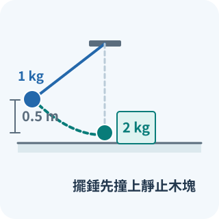
① 讀碰撞條件
擺錘質量 1 kg，木塊質量 2 kg。木塊碰前靜止，擺錘碰後立即停下。
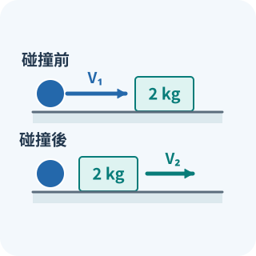
② 分辨兩個速度
V₁ 是擺錘碰前速度，V₂ 是木塊剛啟動時的速度。兩者由不同物體取得。
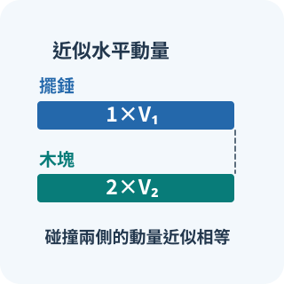
③ 比碰前後的動量
碰撞期間若可忽略桌面摩擦衝量，水平動量近似守恆，1×V₁≈2×V₂，所以 V₁＞V₂。
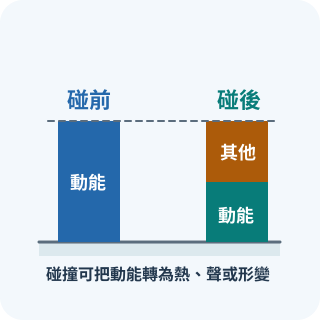
④ 擺錘與木塊的碰撞速率
答案 (A) V₁ ＞ V₂
- 較重的木塊不可能取得足以和擺錘同速的動能。
- 碰撞中機械能可轉為形變、熱或聲。
核對註記：已逐字核對真正的使用者原卷與紅筆訂正。日期採首次提問的台灣日期。冊次與章節沒有足夠的原卷標示，歸綜合。
原圖（僅本題）
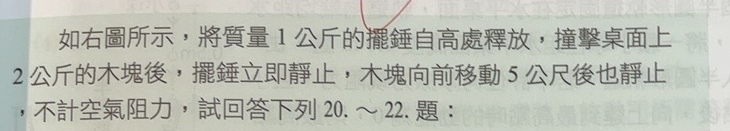
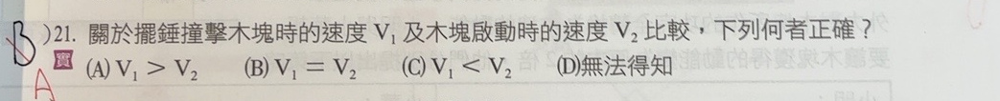
理化第22題｜擺錘撞木塊實驗中的兩種守恆
分享原卷｜第22題 · 首次出題日期 2026-11-25 · 原AI對話 ↗
逐項解析
| 選項與原句 | 判讀 | 句意與判斷理由 |
|---|---|---|
| (A) 擺錘擺動時遵守力學能守恆定律 | 不選 | 擺錘擺下、尚未撞擊時，忽略空氣阻力及支點損耗，力學能守恆。 |
| (B) 整個系統能量包含位能、動能及熱能 | 不選 | 位能、動能及熱能都屬於系統能量。 |
| (C) 木塊移動時遵守力學能守恆定律 | 應選 | 木塊受到摩擦，動能減少、重力位能不變，故力學能不守恆。本題要選有誤者。 |
| (D) 整個系統的能量總值不變 | 不選 | 完整系統的總能量不會因動能轉為熱而減少。 |
詳細說明與解題步驟
擺錘擺下時不計阻力，重力位能轉為動能，力學能守恆。木塊撞後在水平桌面上滑行，最後停止；高度不變、動能減少，摩擦把部分力學能轉為熱等，木塊滑動段的力學能不守恆。將地面接觸、熱、聲與其他能量形式一併計入相應的完整系統，總能量仍守恆。
(A) 擺錘擺下、尚未撞擊時，忽略空氣阻力及支點損耗，力學能守恆。
(B) 位能、動能及熱能都屬於系統能量。
(C) 木塊受到摩擦，動能減少、重力位能不變，故力學能不守恆。本題要選有誤者。
(D) 完整系統的總能量不會因動能轉為熱而減少。
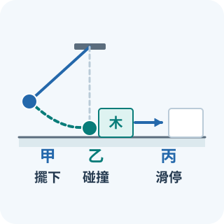
① 定位實驗各段
擺錘擺向木塊並撞擊，木塊之後在桌面滑行到停止。
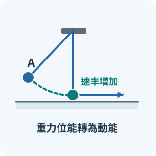
② 看擺錘擺下
擺錘還沒有撞上木塊時忽略阻力，下降的重力位能轉成動能，力學能守恆。
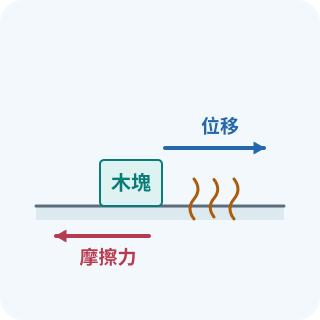
③ 看木塊滑動
摩擦力對木塊作負功，木塊不改變高度而動能降低，力學能逐步轉成熱等。
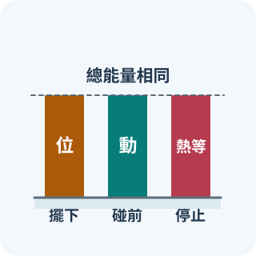
④ 擺錘撞木塊實驗中的兩種守恆
答案 (C) 木塊移動時遵守力學能守恆定律
- 木塊在滑動段的力學能不守恆，故 C 有誤。
- 把熱等一併納入，完整系統仍符合能量守恆。
核對註記：已逐字核對真正的使用者原卷與紅筆訂正。日期採首次提問的台灣日期。冊次與章節沒有足夠的原卷標示，歸綜合。
原圖（僅本題）
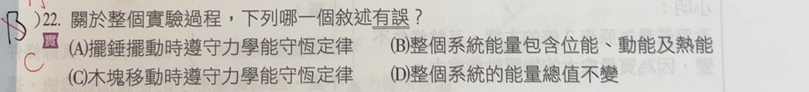